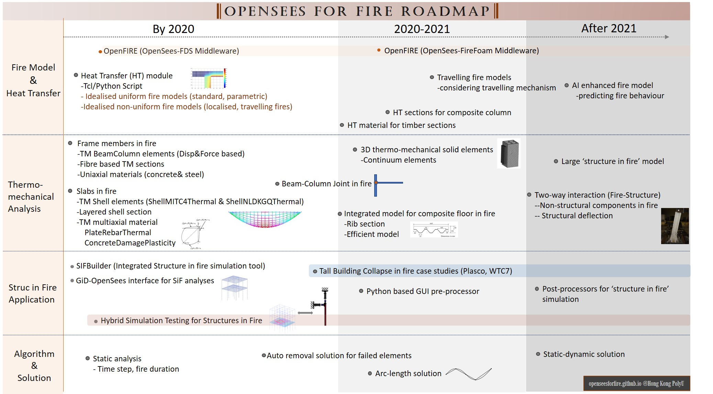

About OpenSees for Fire
Objectives and Roadmap
The aim of this work is to enable OpenSees an integrated tool for modelling "structures in fire". The developed capabilities include the following aspects:
1. Fire modelling and Heat Transfer from fire to stuctural members
2. Thermo-mechanical analysis including elements, sections, and materials
3. "Structure in fire" applications within OpenSees for fire
4. Computational algorithum and solution strategies for modelling structures in fires
The roadmap of OpenSees for fire is illustrated as follows (See a PDF version):

Work done so far
Significant progress has been made on items 1, 2, 3, 5 and 6 above and all completed and tested work can be downloaded from these pages. This is currently limited to thermomechanical analysis of planar (2D) frames. All the completed and tested development work has also been forwarded to OpenSees Berkeley for inclusion in the next general release.
Planned future work
The immediate next step will be to complete the 3D thermomechanical analysis and thoroughly test it in the same way as the 2D work has been and make it available for integration into the next OpenSees release.
The medium term work will focus on integrating the inputs required for Fire and Heat Transfer analysis into the current tcl-tk scripting system. When complete this work will enable the modelling of structures subjected to complex evolutions of temperatures in space and time much more conveniently than is possible now (even with commercial codes).
Once the above is completed our longer term plan is to develop an interface between OpenSees and the open CFD code OpenFOAM (which can simulate external combustion or fires).
This page is created by Liming Jiang, 2016